CHIP RT1060 All-clusters Application#
The all-clusters example implements a server which can be accessed by a CHIP controller and can accept basic cluster commands.
The example is based on Project CHIP and the NXP RT1060 SDK, and provides a prototype application that demonstrates device commissioning and different cluster control.
Introduction#
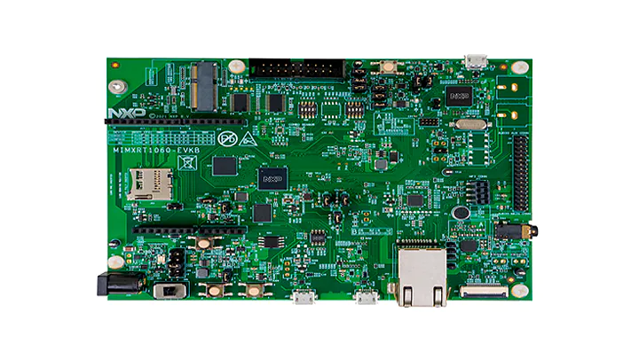
The RT1060 all-cluster application provides a working demonstration of the RT1060 board integration, built using the Project CHIP codebase and the NXP RT1060 SDK.
The example supports:
Matter over Wi-Fi
Matter over Openthread
Matter over Wi-Fi with Openthread Border Router support
The example targets the NXP MIMXRT1060-EVK-B board by default. It is also possible to use the older MIMXRT1060-EVK board, build and board setup instructions differ in some steps.
Configurations supported#
Here are listed configurations supported on RT1060.
Matter over Wi-Fi :
RT1060 + IW416 (Wi-Fi + BLE)
RT1060 + 88W8801 (Wi-Fi)
Experimental: RT1060-EVK-C + IW612 (Wi-fi +BLE)
Matter over Thread :
RT1060 + K32W0 (15.4 + BLE)
Experimental: RT1060-EVK-C + IW612 (15.4 + BLE)
Matter over Wi-Fi with Openthread Border Router support :
RT1060 + 88W8801 + K32W0x1DK6
Hardware requirements RT1060 + transceiver#
Hardware requirements RT1060+IW416#
Host part:
1 MIMXRT1060-EVK-B or MIMXRT1060-EVK board
external 5V supply
Transceiver part:
1 AzureWave AW-AM510-uSD evaluation board
Jumper settings for MIMXRT1060-EVK-B (enables external 5V supply):
remove J40 5-6
connect J40 1-2
connect J45 with external power (controlled by SW6 - position 3)
Jumper settings for MIMXRT1060-EVK (enables external 5V supply):
remove J1 5-6
connect J1 1-2
connect J2 with external power (enabled by SW1 - position 3)
The hardware should be reworked according to the chapter Hardware Rework Guide
for MIMXRT1060-EVK-B and AW-AM510-uSD or the chapter Hardware Rework Guide for
MIMXRT1060-EVK and AW-AM510-uSD in the document
Hardware Rework Guide for EdgeFast BT PAL which can be found in the NXP
RT1060 SDK (docs/wireless/bluetooth/edgefast_bluetooth/Hardware Rework Guide
for EdgeFast BT PAL.pdf):
Make sure resistors R368/R376/R347/R349/R365/R363/R193/R186 are removed.
Only the SDK package downloaded from https://mcuxpresso.nxp.com contains the PDF document mentioned above, it is not present in the SDK downloaded from GitHub using the west tool.
Jumper settings for AzureWave AW-AM510-uSD Module:
J4 1-2:
VIO1.8V (Voltage level of SD-IO pins is 1.8V)J2 1-2: 3.3V
VIO_uSD(Power Supply from uSD connector)The pin 1 of J4 is not marked on the board. Please note that pin numbering of J4 is opposite to J2.
Plug AW-AM510-uSD into uSD connector J22 on MIMXRT1060-EVK-B or J39 on MIMXRT1060-EVK.
Connect the following pins between RT1060 and AW-AM510-uSD to enable Bluetooth HCI UART:
PIN NAME |
AW-AM510-uSD |
MIMXRT1060-EVK-B |
MIMXRT1060-EVK |
PIN NAME OF RT1060 |
GPIO NAME OF RT1060 |
|---|---|---|---|---|---|
|
|
|
|
|
|
|
|
|
|
|
|
|
|
|
|
|
|
|
|
|
|
|
|
|
|
|
|
|
|
Attach external antenna into connector on AW-AM510-uSD.
Additional information about the AW-AM510-uSD can be found in the user manual UM11441 - Getting Started with NXP-based Wireless Modules and i.MX RT Platform Running RTOS, which can be found in the NXP RT1060 SDK (docs/wireless/UM11441-Getting-Started-with-NXP-based-Wireless-Modules-and-i.MX-RT-Platform-Running-on-RTOS.pdf). Only the SDK package downloaded from https://mcuxpresso.nxp.com contains the PDF document, it is not present in the SDK downloaded from GitHub using the west tool.
Hardware requirements RT1060+88W8801#
Host part:
1 MIMXRT1060-EVK-B
Transceiver part :
1 88W8801 2DS M.2 Module (rev A)
1 Murata uSD-M.2 Adapter (rev B1)
The 88W8801 2DS M.2 Module should be inserted into the Murata uSD-M.2 Adapter
and inserted in the uSD slot J22 of MIMXRT1060-EVK-B. The Murata uSD-M.2 Adapter
can be powered up using uSD pins. For that, set the J1 jumper of Murata uSD-M.2
to position 2-3 (Position 2-3: VBAT supply, typical 3.1 ~ 3.3V, from microSD
connector).
Note: as the 88W8801 module supports only the 2.4 GHz Wi-Fi band, it is mandatory to connect it to a Wi-Fi access point on the 2.4 GHz band.
Hardware requirements RT1060 + K32W0#
Host part:
1 MIMXRT1060-EVK-B or MIMXRT1060-EVK board
Transceiver part:
1 OM15076-3 Carrier Board (DK6 board)
1 K32W0 Module to be plugged on the Carrier Board
Board settings
The below table explains pin settings (UART settings) to connect the MIMXRT1060-EVK-B (host) to a k32w061 transceiver (rcp).
PIN NAME |
DK6 (K32W061) |
MIMXRT1060-EVK-B |
MIMXRT1060-EVK |
PIN NAME OF RT1060 |
GPIO NAME OF RT1060 |
|---|---|---|---|---|---|
|
|
|
|
|
|
|
|
|
|
|
|
|
|
|
|
|
|
|
|
|
|
|
|
|
|
|
|
|
|
|
|
|
|
|
|
|
|
|
|
|
|
The below picture shows pins connections for the MIMXRT1060-EVK.

Hardware requirements RT1060-EVK-C+IW612#
Host part:
1 MIMXRT1060-EVK-C
Hardware should be reworked as below:
populate R93, R96, R2155, R2156, R2157, R2158, R2159 with 0Ohm resistors
J76 and J107 jumpers in 2-3 position.
J109 and J110 jumpers in 1-2 position.
disconnect pin15 of component U9
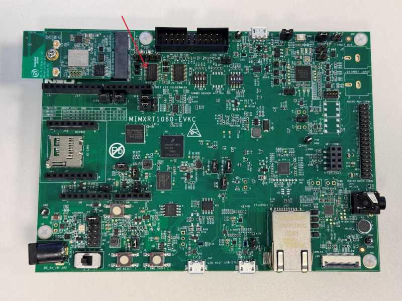

Transceiver part :

Hardware requirements RT1060 + 88W8801 + K32W0x1DK6#
i.MX RT1060 EVK-A or EVK-B board
88W8801 module (for Wi-Fi connection), for example 88W8801 2DS M.2 Module (rev A) and Murata uSD-M.2 Adapter (rev B1)
K32W0x1 mezzanine module (for Thread connection)
IOT_ZTB-DK006carrier board for the K32W0x1 module (referenced as DK6 carrier board)
Building#
In order to build the Project CHIP example, we recommend using a Linux distribution. Supported Operating Systems are listed in BUILDING.md.
Make sure that below prerequisites are correctly installed, as described in BUILDING.md.
sudo apt-get install git gcc g++ pkg-config libssl-dev libdbus-1-dev \
libglib2.0-dev libavahi-client-dev ninja-build python3-venv python3-dev \
python3-pip unzip libgirepository1.0-dev libcairo2-dev libreadline-dev
Step 1: checkout NXP specific submodules only
user@ubuntu:~/Desktop/git/connectedhomeip$ scripts/checkout_submodules.py --shallow --platform nxp --recursive
Step 2: activate local environment
user@ubuntu:~/Desktop/git/connectedhomeip$ source scripts/activate.sh
If the script says the environment is out of date, you can update it by running the following command:
user@ubuntu:~/Desktop/git/connectedhomeip$ source scripts/bootstrap.sh
Step 3: Init NXP SDK(s)
user@ubuntu:~/Desktop/git/connectedhomeip$ third_party/nxp/nxp_matter_support/scripts/update_nxp_sdk.py --platform common
Note: By default update_nxp_sdk.py will try to initialize all NXP SDKs. Arg “– help” could be used to view all available options.
Start building the application.
Building with Matter over Wifi configuration on RT1060 + transceiver#
Build the Wi-fi configuration for MIMXRT1060-EVK-B board + IW416 transceiver (with BLE for commissioning).
user@ubuntu:~/Desktop/git/connectedhomeip/examples/all-clusters-app/nxp/rt/rt1060$ gn gen --args="chip_enable_wifi=true iw416_transceiver=true" out/debug
user@ubuntu:~/Desktop/git/connectedhomeip/examples/all-clusters-app/nxp/rt/rt1060$ ninja -C out/debug
Build the Wi-fi configuration for MIMXRT1060-EVK-B board + 88W8801 transceiver with Matter-over-Wifi configuration and only onnetwork commissioning (without BLE, the WiFi network credentials are provided at build-time which will enable the device to join the Wi-Fi AP at startup):
user@ubuntu:~/Desktop/git/connectedhomeip/examples/all-clusters-app/nxp/rt/rt1060$ export ssid_name=<nwk_ssid> && export ssid_password=<nwk_password> && gn gen --args="chip_enable_wifi=true w8801_transceiver=true chip_config_network_layer_ble=false wifi_auto_connect_at_boot=true wifi_auto_connect_at_boot_ssid=\"${ssid_name}\" wifi_auto_connect_at_boot_password=\"${ssid_password}\"" out/debug
user@ubuntu:~/Desktop/git/connectedhomeip/examples/all-clusters-app/nxp/rt/rt1060$ ninja -C out/debug
Build the Wi-fi configuration for MIMXRT1060-EVK-C board + IW612 transceiver (with BLE for commissioning).
user@ubuntu:~/Desktop/git/connectedhomeip/examples/all-clusters-app/nxp/rt/rt1060$ gn gen --args="chip_enable_wifi=true iwx12_transceiver=true evkname=\"evkcmimxrt1060\" " out/debug
user@ubuntu:~/Desktop/git/connectedhomeip/examples/all-clusters-app/nxp/rt/rt1060$ ninja -C out/debug
Build the Wi-fi configuration for MIMXRT1060-EVK-C board + IW612 transceiver with Matter-over-Wifi configuration and only onnetwork commissioning (without BLE, the WiFi network credentials are provided at build-time which will enable the device to join the Wi-Fi AP at startup):
user@ubuntu:~/Desktop/git/connectedhomeip/examples/all-clusters-app/nxp/rt/rt1060$ gn gen --args="chip_enable_wifi=true iwx12_transceiver=true evkname=\"evkcmimxrt1060\" chip_config_network_layer_ble=false tcp_download=true wifi_ssid=\"your_wifi_ssid\" wifi_password=\"your_wifi_password\"" out/debug
user@ubuntu:~/Desktop/git/connectedhomeip/examples/all-clusters-app/nxp/rt/rt1060$ ninja -C out/debug
Build with Matter over Thread configuration on RT1060 + transceiver#
Build with Matter over Thread configuration on RT1060 + K32W0#
For this configuration a K32W0 RCP image is required and must support in a single image the openthread RCP configuration and the BLE HCI BB configuration. Messages between the host and the K32W0 transceiver are transferred on a single UART with flow control support. For that the HDLC-Lite framing protocol is used to transfer spinel and hci frames. In addition, hci and spinel frames can be distinguished by using the Spinel convention which is line compatible with BT/BLE HCI.
Before building the Matter host application, it is required to generate the
K32W0 image supporting features as described above. To build this binary the
target ot_rcp_ble_hci_bb_single_uart_fc should be built by following the
Readme.md. After a successful build, a ".h"
file will be generated and would contain the K32W0 RCP binary. As described in
the Readme.md, the application binaries will
be generated in
ot_nxp/build_k32w061/ot_rcp_ble_hci_bb_single_uart_fc/bin/ot-rcp-ble-hci-bb-k32w061.elf.bin.h.
The generate K32W0 transceiver binary ".h" file path must be indicated to the
host Matter application build. In fact the Matter host application is in charge
of storing the K32W0 firmware in its flash to be able to use the
The Over The Wire (OTW) protocol (over UART) to download (at host startup) the
k32w0 transceiver image from the host to the K32W0 internal flash. For more
information on the k32w0 OTW protocol, user can consult the doxygen header of
the file located in
<repo_root>/third_party/nxp/nxp_matter_support/github_sdk/common_sdk/repo/middleware/wireless/framework/OTW/k32w0_transceiver/fwk_otw.c.
Here is a summary of the k32w0 gn gen arguments that are mandatory or optional:
Mandatory:
k32w0_transceiver=trueMandatory:
hci_spinel_single_uart=trueOptional:
k32w0_transceiver_bin_path=\"/home/ot-nxp/build_k32w061/ot_rcp_ble_hci_bb_single_uart_fc/bin/ot-rcp-ble-hci-bb-k32w061.elf.bin.h\"This argument is optional, by default, if not set, the binary file located in “${chip_root}/third_party/openthread/ot_nxp/build_k32w061/ot_rcp_ble_hci_bb_single_uart_fc/bin/ot-rcp-ble-hci-bb-k32w061.elf.bin.h” will be used. If the K32W061 transceiver binary is saved at another location an absolute path of its location should be given.Optional:
otw_logs_enabled=trueThis argument is optional, by default being set to false. If set to true, RT logging will print theOTWlogs.
Below is presented an example of gn gen argument that could be used to generate the host matter application with a k32w0 transceiver.
user@ubuntu:~/Desktop/git/connectedhomeip/examples/all-clusters-app/nxp/rt/rt1060$ gn gen --args="chip_enable_openthread=true k32w0_transceiver=true k32w0_transceiver_bin_path=\"/home/ot-nxp/build_k32w061/ot_rcp_ble_hci_bb_single_uart_fc/bin/ot-rcp-ble-hci-bb-k32w061.elf.bin.h\" hci_spinel_single_uart=true chip_inet_config_enable_ipv4=false chip_config_network_layer_ble=true" out/debug
user@ubuntu:~/Desktop/git/connectedhomeip/examples/all-clusters-app/nxp/rt/rt1060$ ninja -C out/debug
Build with Matter over Thread configuration on RT1060-EVK-C + IW612#
Build the OpenThread configuration for MIMXRT1060-EVK-C board + IW612 transceiver (with BLE for commissioning).
user@ubuntu:~/Desktop/git/connectedhomeip/examples/all-clusters-app/nxp/rt/rt1060$ gn gen --args="chip_enable_openthread=true iwx12_transceiver=true evkname=\"evkcmimxrt1060\" chip_inet_config_enable_ipv4=false chip_config_network_layer_ble=true" " out/debug
user@ubuntu:~/Desktop/git/connectedhomeip/examples/all-clusters-app/nxp/rt/rt1060$ ninja -C out/debug
Build with Matter over Wi-Fi + OpenThread Border Router configuration on RT1060 + 88W8801 + K32W0x1DK6#
This configuration supports the Thread Border Router management cluster to provision the Thread credentials. Enabling the Matter CLI in order to control the Thread network on the Border Router is optional but recommended for other features like the Thread credential sharing.
Note that the Thread Border Router management cluster is only supported on the thermostat application for now.
Build Matter with Border Router configuration with ble-wifi commissioning:
user@ubuntu:~/Desktop/git/connectedhomeip/examples/all-clusters-app/nxp/rt/rt1060$ gn gen --args="chip_enable_wifi=true w8801_transceiver=true chip_enable_matter_cli=true chip_config_network_layer_ble=true chip_enable_openthread=true k32w0_transceiver=true k32w0_transceiver_bin_path=\"/path/to/ot-rcp/ot-rcp-ble-hci-bb-k32w061.elf.bin.h\" hci_spinel_single_uart=true" out/debug
user@ubuntu:~/Desktop/git/connectedhomeip/examples/all-clusters-app/nxp/rt/rt1060$ ninja -C out/debug
Build Matter with Border Router configuration with onnetwork commissioning:
user@ubuntu:~/Desktop/git/connectedhomeip/examples/all-clusters-app/nxp/rt/rt1060$ gn gen --args="chip_enable_wifi=true w8801_transceiver=true chip_enable_matter_cli=true chip_config_network_layer_ble=false wifi_auto_connect_at_boot=true wifi_auto_connect_at_boot_ssid=\"your_wifi_ssid\" wifi_auto_connect_at_boot_password=\"your_wifi_password\" chip_enable_openthread=true k32w0_transceiver=true k32w0_transceiver_bin_path=\"/path/to/ot-rcp/ot-rcp-ble-hci-bb-k32w061.elf.bin.h\"" out/debug
user@ubuntu:~/Desktop/git/connectedhomeip/examples/all-clusters-app/nxp/rt/rt1060$ ninja -C out/debug
General Information#
The resulting output file can be found in out/debug/chip-rt1060-all-cluster-example.
Optional GN options that can be added when building an application:
To enable the secondary network commissioning interface, the arguments
chip_enable_secondary_nwk_if=trueandchip_device_config_thread_network_endpoint_id=3must be added to the gn gen command. Note that this is only supported when building the Matter over Wifi + OpenThread Border Router configuration. Note that is only supported on the on the thermostat application for now.To enable the matter CLI, the argument
chip_enable_matter_cli=truemust be added to the gn gen command.To build the application in debug mode, the argument
is_debug=true optimize_debug=falsemust be added to the gn gen command.By default, the MIMXRT1060-EVK-B will be chosen. To switch to an MIMXRT1060-EVK, the argument
evkname=\"evkmimxrt1060\"must be added to the gn gen command.To build with the option to have Matter certificates/keys pre-loaded in a specific flash area the argument
chip_with_factory_data=1must be added to the gn gen command. For more information, see Guide for writing manufacturing data on NXP devices
Manufacturing data#
See Guide for writing manufacturing data on NXP devices
Other comments:
The RT1060 all cluster app demonstrates the usage of encrypted Matter manufacturing data storage. Matter manufacturing data should be encrypted before flashing them to the RT1060 flash.
For development purpose the RT1060 all cluster app code could use the hardcoded AES 128 software key. This software key should be used only during development stage.
For production usage, it is recommended to use the OTP key which needs to be
fused in the RT1060 SW_GP2. The application note AN12800 should be followed to
get more information. In this case the all cluster app should be updated to
indicate to the DCP module to use the OTP key instead of the software key.
For that the call to FactoryDataPrvdImpl().SetAes128Key() should be changed to
FactoryDataPrvdImpl().SetKeySelected(KeySelect::) with the arg value
specifying where the OTP key is stored (kDCP_OCOTPKeyLow for [127:0] of
SW_GP2 or kDCP_OCOTPKeyHigh for [255:128] of SW_GP2). For more information the
RT1060 FactoryDataProviderImpl class description should be checked.
Flashing and debugging#
In order to flash the application we recommend using MCUXpresso IDE (version >= 11.6.0).
Import the previously downloaded NXP SDK into MCUXpresso IDE.
Right click the empty space in the MCUXpresso IDE “Installed SDKs” tab to show the menu, select the “Import local SDK Git repository” menu item.
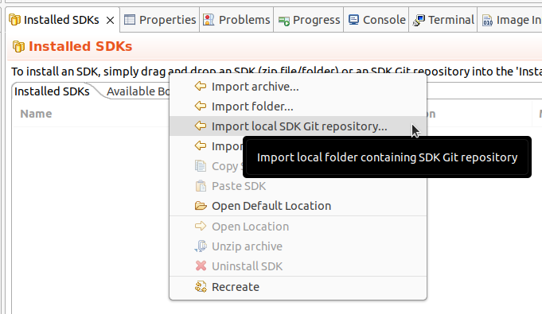
The “Import SDK Git” window will open. The “Repository location” text field should point to the west workspace (third_party/nxp/nxp_matter_support/github_sdk/common_sdk/repo subfolder of the Matter repository). The “Manifest(s) folder” text field should point to its core subfolder (third_party/nxp/nxp_matter_support/github_sdk/common_sdk/repo/core subfolder of the Matter repository). Click “OK” and wait for MCUXpresso IDE to import the SDK.
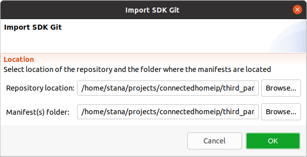
Finally select the desired board’s SDK manifest in the “Installed SDKs” tab.
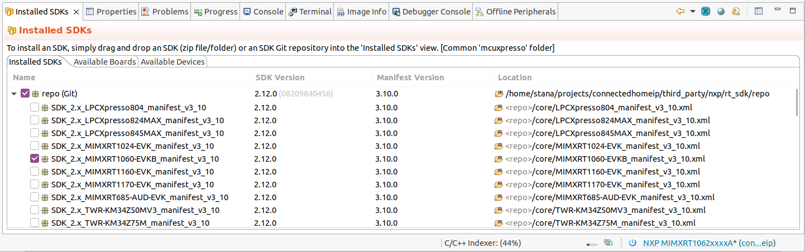
Import the connectedhomeip repo in MCUXpresso IDE as Makefile Project. Use none as Toolchain for Indexer Settings:
File -> Import -> C/C++ -> Existing Code as Makefile Project
Configure MCU Settings:
Right click on the Project -> Properties -> C/C++ Build -> MCU Settings -> Select MIMXRT1060 -> Apply & Close
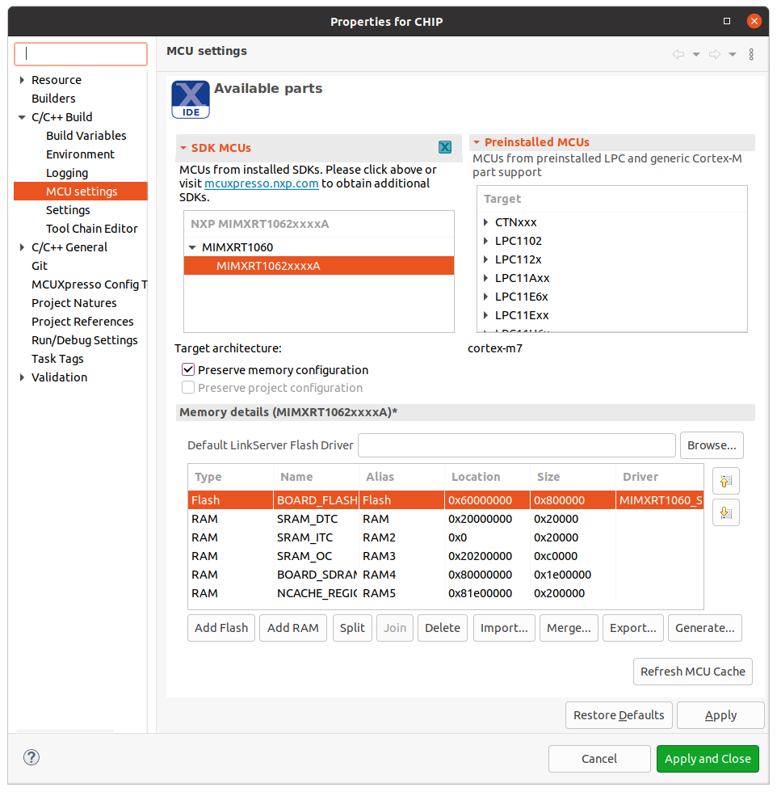
Sometimes when the MCU is selected it will not initialize all the memory regions
(usually the BOARD_FLASH, BOARD_SDRAM and NCACHE_REGION) so it is required
that this regions are added manually like in the image above. In addition to
that on the BOARD_FLASH line, in the driver tab:
click inside the tab and on the right side a button with three horizontal dots will appear
click on the button and an window will show
form the dropdown menu select the MIMXRT1060_SFDP_QSPI driver
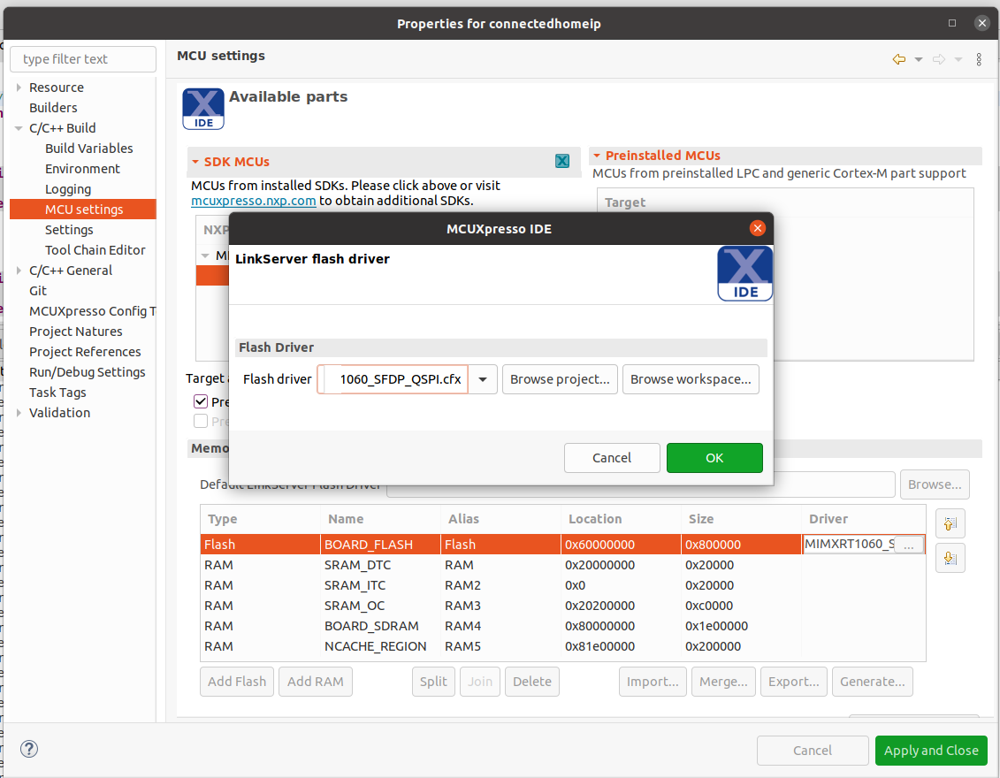
Configure the toolchain editor:
Right click on the Project -> C/C++ Build-> Tool Chain Editor -> NXP MCU Tools -> Apply & Close

Create a debug configuration:
Right click on the Project -> Debug -> As->MCUXpresso IDE LinkServer (inc. CMSIS-DAP) probes -> OK -> Select elf file
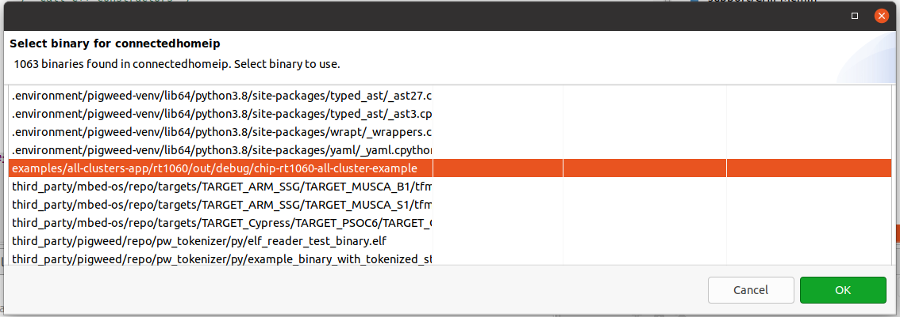
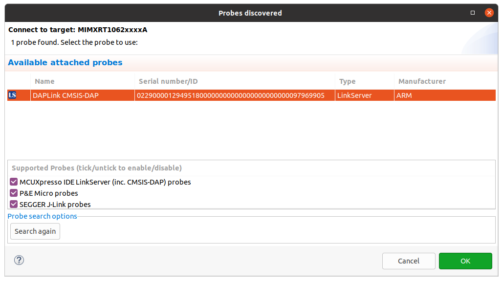
Set the Connect script for the debug configuration to RT1060_connect.scp from the dropdown list:
Right click on the Project -> Debug As -> Debug configurations... -> LinkServer Debugger
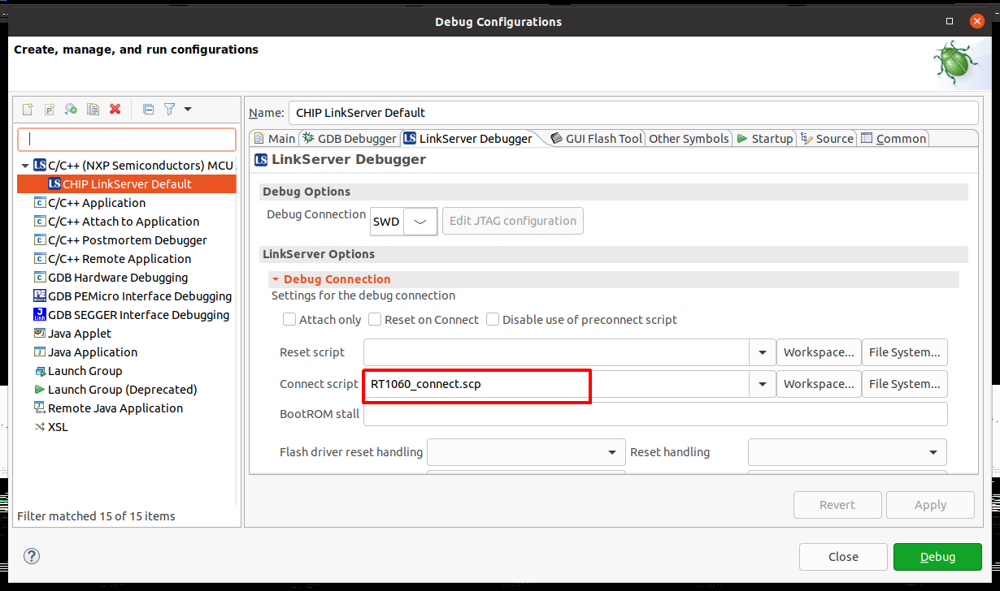
Set the Initialization Commands to:
Right click on the Project -> Debug As -> Debug configurations... -> Startup
set non-stop on
set pagination off
set mi-async
set remotetimeout 60000
##target_extended_remote##
set mem inaccessible-by-default ${mem.access}
mon ondisconnect ${ondisconnect}
set arm force-mode thumb
${load}
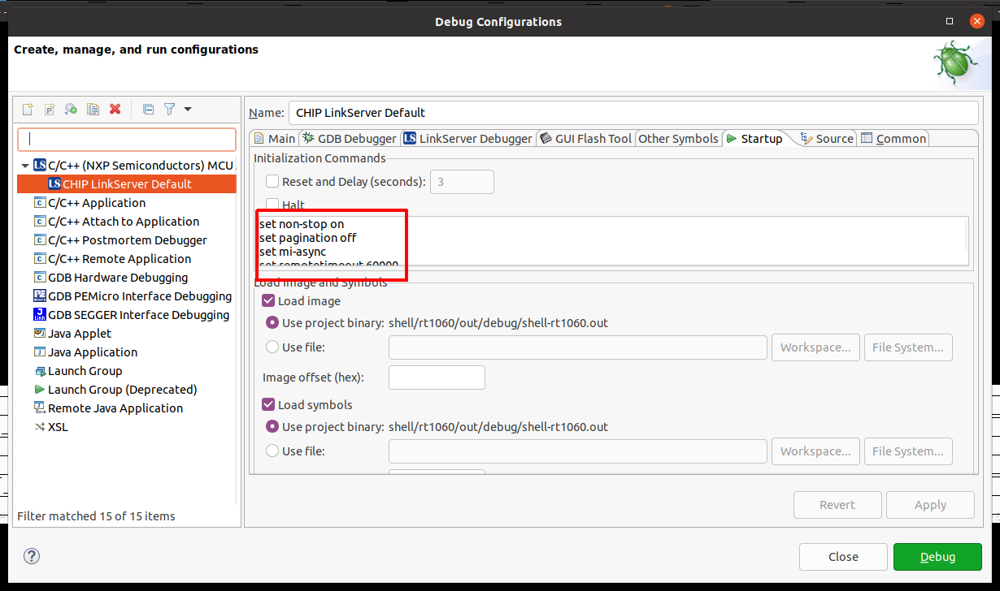
Set the vector.catch value to false inside the .launch file:
Right click on the Project -> Utilities -> Open Directory Browser here -> edit *.launch file:
<booleanAttribute key="vector.catch" value="false"/>
Debug using the newly created configuration file:
Testing the example#
To know how to commission a device over BLE, follow the instructions from chip-tool’s README.md ‘Commission a device over BLE’.
To know how to commissioning a device over IP, follow the instructions from chip-tool’s README.md ‘Pair a device over IP’
Matter over wifi configuration :#
The “ble-wifi” pairing method can be used in order to commission the device.
Matter over thread configuration :#
The “ble-thread” pairing method can be used in order to commission the device.
Matter over wifi with openthread border router configuration :#
In order to create or join a Thread network on the Matter Border Router, the TBR
management cluster or the otcli commands from the matter CLI can be used. For
more information about using the TBR management cluster follow instructions from
‘Using the TBR management cluster’.
For more information about using the matter shell, follow instructions from
‘Testing the all-clusters application with Matter CLI’.
In this configuration, the device can be commissioned over Wi-Fi with the ‘ble-wifi’ or ‘onnetwork’ pairing method.
Testing the all-clusters application without Matter CLI:#
Prepare the board with the flashed
All-cluster application(as shown above).The All-cluster example uses UART1 to print logs while running the server. To view raw UART output, start a terminal emulator like PuTTY and connect to the used COM port with the following UART settings:
Baud rate: 115200
8 data bits
1 stop bit
No parity
No flow control
Open a terminal connection on the board and watch the printed logs.
On the client side, start sending commands using the chip-tool application as it is described here.
Testing the all-clusters application with Matter CLI enabled:#
The Matter CLI can be enabled with the all-clusters application.
For more information about the Matter CLI default commands, you can refer to the dedicated ReadMe.
The All-clusters application supports additional commands :
> help
[...]
mattercommissioning Open/close the commissioning window. Usage : mattercommissioning [on|off]
matterfactoryreset Perform a factory reset on the device
matterreset Reset the device
matterfactoryresetcommand erases the file system completely (all Matter settings are erased).matterresetenables the device to reboot without erasing the settings.
Here are described steps to use the all-cluster-app with the Matter CLI enabled
Prepare the board with the flashed
All-cluster application(as shown above).The matter CLI is accessible in UART1. For that, start a terminal emulator like PuTTY and connect to the used COM port with the following UART settings:
Baud rate: 115200
8 data bits
1 stop bit
No parity
No flow control
The All-cluster example uses UART2 to print logs while running the server. To view raw UART output, a pin should be plugged to an USB to UART adapter (connector J16 pin 7 in case of MIMXRT1060-EVK-B board or connector J22 pin 7 in case of MIMXRT1060-EVK board), then start a terminal emulator like PuTTY and connect to the used COM port with the following UART settings:
Baud rate: 115200
8 data bits
1 stop bit
No parity
No flow control
On the client side, start sending commands using the chip-tool application as it is described here.
For Matter with OpenThread Border Router support, the matter CLI can be used to start/join the Thread network, using the following ot-cli commands. (Note that setting channel, panid, and network key is not enough anymore because of an Open Thread stack update. We first need to initialize a new dataset.)
> otcli dataset init new
Done
> otcli dataset
Active Timestamp: 1
Channel: 25
Channel Mask: 0x07fff800
Ext PAN ID: 42af793f623aab54
Mesh Local Prefix: fd6e:c358:7078:5a8d::/64
Network Key: f824658f79d8ca033fbb85ecc3ca91cc
Network Name: OpenThread-b870
PAN ID: 0xb870
PSKc: f438a194a5e968cc43cc4b3a6f560ca4
Security Policy: 672 onrc 0
Done
> otcli dataset panid 0xabcd
Done
> otcli dataset channel 25
Done
> otcli dataset commit active
Done
> otcli ifconfig up
Done
> otcli thread start
Done
> otcli state
leader
Done
Thread Border Router overview#
To enable Thread Border Router support see the build section.
The complete Border Router guide is located here.